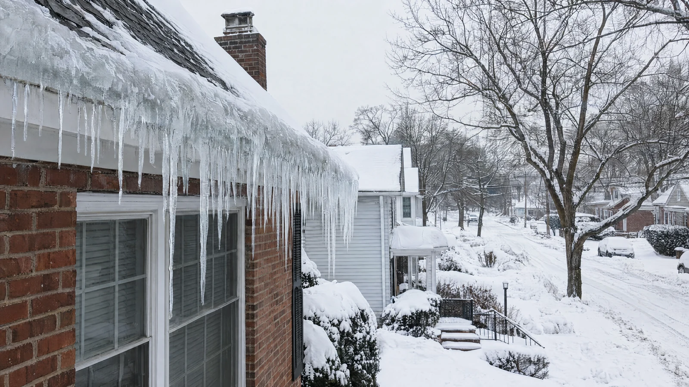

After Winter Storms in New York and New Jersey: How to Find a Public Adjuster

After a winter storm in New York or New Jersey, the damage you can see from the sidewalk is rarely the whole loss. Snow load, ice dams, frozen pipes, and wind-driven snow can wet roof decks, wall cavities, and finished basements in ways that only show up days later, when meltwater finds a ceiling seam or a pipe thaws and lets go. If you are trying to find a public adjuster after that kind of storm, this guide explains what a licensed public adjuster actually does on a winter claim, how to check credentials in the state where the property sits, and which parts of the file tend to be missed when a claim is scoped too quickly.
United Claims Specialists works for the property owner, not the insurance company. A carrier adjuster is assigned by the insurer. A public adjuster is retained by you, documents the loss on your side of the file, and handles the back-and-forth that follows. That distinction matters most on winter losses, because the argument is usually not whether a storm happened. It is how far the water traveled, what it touched, and whether the first scope priced the full repair.
What winter storms actually do to houses in New York and New Jersey
Winter losses in the Northeast tend to arrive in layers. A single storm can combine wind, heavy wet snow, a hard freeze, and then a thaw, and each phase creates a different kind of damage. Understanding which mechanism caused which stain is the first step toward a coherent claim, because carriers organise files around cause and date of loss, not around how the room looks a week later.
Ice dams and roof-edge backup
An ice dam forms when heat escaping from the living space warms the upper part of the roof, melts snow there, and sends water down to a colder eave, where it refreezes. As that ridge of ice grows, meltwater ponds behind it and can work under shingles and flashing. The result is often a leak that appears far from any obvious roof opening, wet insulation in the attic, and staining that migrates along ceiling joists. From the ground, the roof can look intact. Inside the wall and ceiling assembly, the damage can be extensive.
Frozen and burst pipes
Pipes in exterior walls, crawl spaces, garages, and unheated additions are vulnerable during extended cold snaps. Water expands as it freezes, and the split in the pipe often does not announce itself until temperatures rise and pressurized water escapes. By then it may run through floors and ceilings for some time before anyone notices. A freeze claim therefore involves two questions: the plumbing repair itself, which many policies treat differently from the resulting water damage, and the often larger cost of opening, drying, and restoring the rooms the water passed through. Our guide to frozen pipe insurance claims covers that pattern in more depth.
Snow load, limbs, and wind openings
Heavy snow and ice add weight to roofs, porches, and additions, and they bring down limbs that puncture roofing or damage siding and gutters. Wind can lift shingles or drive snow into vents and small openings, where it melts inside the building assembly. These openings can look minor during a short inspection while still admitting enough water to wet the roof deck and the insulation below it.
Secondary damage after the thaw
Wet drywall, insulation, and flooring that are not properly dried can lead to odor and microbial growth, warped materials, and finishes that fail months later. That is why the scope of a winter claim is not just a list of visible stains. It should account for what got wet, how it was dried, and what must be opened or removed to restore the assembly correctly. For the broader water picture, see our water damage insurance claims page and our storm damage overview.
First priorities once the property is safe
Safety comes before any claim task. Keep clear of sagging ceilings, ice-heavy roofs, and any area where water may have reached electrical systems, and contact emergency services or your utility provider first when something looks dangerous. Do not climb onto an icy roof to take photographs. Ground-level and interior documentation, gathered safely, is far more useful than a dramatic rooftop image taken at personal risk.
Most property policies also expect the owner to take reasonable steps to limit further damage once a loss is discovered. In winter that can mean shutting off water to a burst pipe, arranging emergency drying, or having a dangerous limb removed. Keep invoices and receipts for that emergency work, and do not discard damaged materials before they have been documented. A public adjuster can coordinate how that early mitigation is recorded so the file tells a clear story later, rather than leaving you to reconstruct it from memory.
Give the carrier prompt notice of the loss. Keep that first notice factual and brief: the property address, the approximate date you believe the damage occurred, and the areas affected. Longer explanations about cause, fault, or repair plans are better made once the loss has been properly inspected and documented. This is one reason many property owners bring a public adjuster in early. The claim conversation then runs through a professional whose job is to keep it accurate and complete.
How to find a public adjuster in New York or New Jersey
The search is simpler when you check a few concrete things in order. None of them require you to become a claims expert. They require you to confirm that the person in front of you is licensed, independent, and set up to document a winter loss properly.
1. Confirm the license in the state where the property sits
Public adjusters are licensed by state, and the license that matters is the one for the state where the damaged property is located, not where you happen to live or where the adjuster has an office. New York and New Jersey each maintain their own licensing system for public adjusters, and you can verify a license through the state insurance regulator before you sign anything. If a property straddles your life in both states, for example a residence in Bergen County and a building in Rockland County, each claim needs an adjuster licensed for that property's state. Our state pages set out the local picture for New Jersey public adjuster services and New York public adjuster services.
2. Make sure the adjuster works for property owners only
A public adjuster represents policyholders. That is a different role from a carrier adjuster, an independent adjuster hired by an insurer, a restoration contractor, or a roofer. Contractors and remediators do essential physical work, and their estimates can inform a claim, but negotiating the claim is the public adjuster's lane. Ask directly who the adjuster represents and how they are paid. The fee arrangement should be explained plainly and put in writing before work begins.
3. Ask how they document winter losses specifically
A useful answer goes beyond photographs. Ask how the adjuster records the date of loss when a freeze, a thaw, and visible staining may fall on different days. Ask whether they inspect attics and roof edges where access allows, how moisture in walls and floors is recorded, who measures and sketches the affected rooms, and how contents and temporary repairs are logged. Winter claims are won or lost on that paper trail, because the carrier's first visit may happen after snow and ice have melted and the physical evidence has changed.
4. Ask who handles carrier communication
Find out who speaks with the carrier, who attends inspections, and who responds when the insurer asks for documents or a proof of loss. You should expect clear updates in plain language and copies of the important figures in your file, including the adjuster's own scope and estimate. If the answers are vague at the first meeting, they rarely become clearer once the claim is underway.
5. Check local familiarity
Local knowledge is practical, not decorative. Older housing across northern New Jersey and the lower Hudson Valley often includes plaster walls, finished basements, additions built over several decades, and heating and plumbing runs in exterior walls, all of which change how winter water moves through a building. United Claims Specialists serves property owners across areas including Bergen County, Hackensack, and Rockland County, and that familiarity shapes what gets inspected first.
What a public adjuster builds on a winter claim
The work is documentation, valuation, and communication, carried out in a sequence the carrier can follow.
- Loss narrative and date of loss. Which storm, which freeze, and when the damage was discovered, organized so the events connect logically.
- Room-by-room scope. Measurements, photographs, and notes for every affected area, including attics, wall cavities, and finished spaces below the source.
- Moisture and hidden-damage record. Where water traveled, what materials stayed wet, and what must be opened, dried, or removed.
- Priced estimate. A line-item repair estimate based on the documented scope, so disagreements are about specific items rather than a single unexplained number.
- Contents and additional living expense records. Damaged personal property, emergency costs, and, where the policy provides it and the residence is not habitable, temporary housing expenses with receipts.
- Carrier correspondence. Inspection attendance, document requests, estimate reviews, and follow-up when the first scope leaves documented items out.
That record also protects the claim later. If meltwater reveals further damage after the first inspection, a well-documented file makes it far easier to show that the newly found damage belongs to the same loss. This is the same principle behind burst pipe claim help: connect the cause, the path of the water, and the repair in one continuous account.
Reading the policy points that matter in winter
No article can tell you what your policy covers, because forms, endorsements, and limits vary. A public adjuster reads the actual policy against the actual damage. Still, a few concepts explain most winter claim disputes, and they are worth understanding before anyone quotes you a number.
Sudden and accidental versus gradual. Property policies are generally built around sudden, accidental events. A burst pipe during a freeze is a different conversation from a slow leak that ran unnoticed for months. Dating the event accurately, and separating new storm damage from older wear, is central to how the claim is presented.
Resulting water damage versus the failed part. Policies often treat the repair of the pipe or appliance that failed differently from the damage the escaping water caused to floors, walls, and contents. A scope that only prices the plumbing fix has answered the smaller question.
Endorsements for specific water categories. Some categories of water, such as backup through sewers or drains, are commonly handled through specific endorsements with their own limits, while water rising outside the building is generally the territory of separate flood coverage rather than a standard property policy. The distinctions are technical, and they are exactly why the policy itself, not a rule of thumb, controls the answer.
Duties and deadlines after a loss. Policies typically require prompt notice, reasonable protection of the property, and cooperation with the claim investigation, and they may set deadlines for submitting a sworn proof of loss when one is requested or for bringing suit if a dispute cannot be resolved. Those deadlines come from your contract and applicable state law, so they should be identified at the start of the claim, in writing, rather than discovered near the end. A public adjuster calendars those dates as part of managing the file.
Depreciation and how it is applied. Many policies pay part of a claim on an actual cash value basis first and release withheld depreciation only when repairs are completed and documented, a structure described more fully on our what is a public adjuster page in the context of how claims are handled. Knowing which figures are initial and which are recoverable prevents a common misunderstanding in the middle of a winter repair.
When the first scope comes back thin
It is common for a first carrier scope on a winter loss to price the visible stain and miss the assembly behind it: wet insulation left in place, a ceiling measured without the adjoining room, flooring priced without matching or subfloor damage, or drying treated as an afterthought. That does not automatically mean the claim is over. Where additional damage from the same loss can be documented, a public adjuster can present a supplemental scope that ties the new items back to the original event with photographs, measurements, and pricing.
Timing still matters. Policies contain notice and proof requirements, and waiting until repairs are finished and evidence is discarded makes any second look harder. If you suspect the first scope missed part of a winter loss, the useful step is a prompt review of the file while the damage, or at least its documentation, is still available. Our overview of the public adjuster process explains how that review and the claim sequence normally run.
Questions to ask before you sign with any public adjuster
- Are you licensed as a public adjuster in the state where this property is located, and can I verify that license?
- Who will inspect the property, attend the carrier inspection, and speak with the insurer day to day?
- How is your fee calculated, when is it payable, and is that set out in a written agreement?
- What documentation will I receive: scope, estimate, contents list, and correspondence?
- How do you handle damage that appears later, after a thaw or after walls are opened?
- What parts of this claim fall outside your role, and when would I need a contractor, an engineer, or an attorney instead?
Clear answers to those questions are a better predictor of a well-run claim than any promise made in an advertisement. A public adjuster should be comfortable explaining the limits of the role as well as its strengths, including the fact that no adjuster can guarantee a particular outcome on a claim.
Frequently asked questions
How soon after a winter storm should I contact a public adjuster?
As soon as the property is safe and you can see, or reasonably suspect, damage beyond a minor repair. Early involvement lets the adjuster document conditions before melting, drying, and emergency repairs change the evidence, and it means carrier communication runs through the adjuster from the start.
Does a public adjuster work for the insurance company?
No. A public adjuster is retained by the property owner and represents the owner's interests in documenting and presenting the claim. The adjuster assigned by the carrier represents the insurer. The two roles are distinct, which is why the license category matters when you verify credentials.
What if damage only appeared days after the storm?
Delayed discovery is typical of ice dams and frozen pipes, where staining or a burst line may appear at thaw rather than during the storm itself. What matters is documenting when the damage was discovered, preserving photographs and mitigation records, and connecting the condition to the storm event in a coherent account for the carrier.
Can a public adjuster reopen or supplement a winter claim that was already scoped?
In many cases a claim can be supplemented when further damage from the same loss is documented, subject to the policy's notice, proof, and timing requirements. The strength of that request depends on the documentation that survives, so it is worth having the file reviewed promptly rather than after repairs are complete.
How are public adjusters paid?
Fee arrangements vary and must be explained and documented in a written agreement before work begins. Ask how the fee is calculated, when it becomes payable, and what services it covers, and keep that agreement with your claim records.
A steady next step
If a winter storm has left you with roof, water, or freeze damage in New York or New Jersey and you would like the claim handled by a licensed professional on your side, United Claims Specialists can review what happened and explain what the file needs next. There is no pressure in that conversation, and no outcome is promised. You can start through insurance claim help or contact us, or call 855-321-5677.